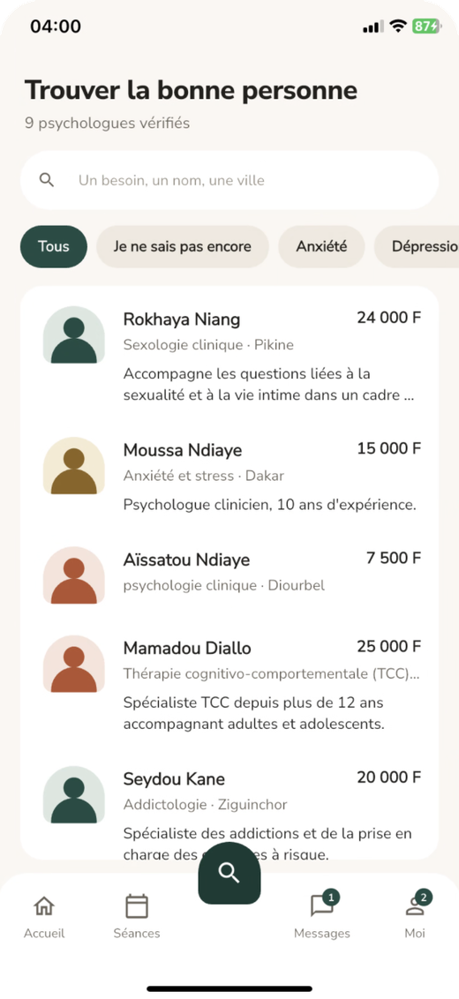

Trouver la bonne personne, même sans savoir quoi chercher
On cherche par besoin, par nom ou par ville. Pour une première démarche, le filtre « Je ne sais pas encore » aide à faire un premier pas.
- Seuls les psychologues dont le diplôme a été contrôlé apparaissent.
- Les suggestions tiennent compte de votre profil, pas seulement des notes.
- Les avis viennent uniquement de patients qui ont consulté.